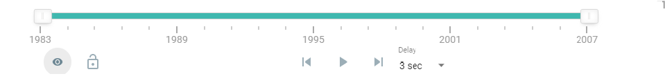
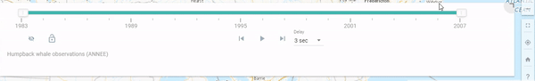
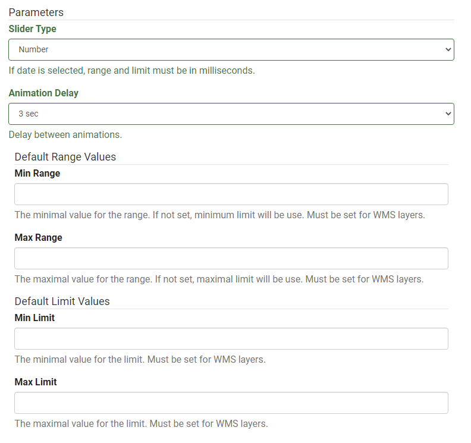
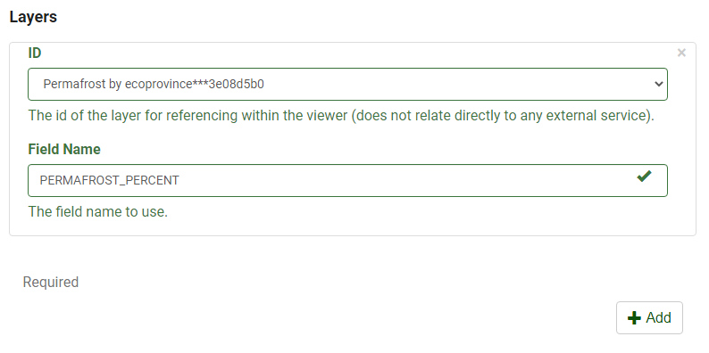

What is the Range/Time Slider
The Range/Time Slider offers a dynamic way to visualize your data. The basic slider is a horizontal bar and has anchors that can be moved to establish the range of the values to be used. To visualize your data as a dynamic range, you can use any layer that contains numeric or date fields. Once you define the range properties for your layer, an interactive, on-screen slider is used to explore the data through a range/time you customized. Using this plugin, you can control the animation of the data with buttons to play and pause, go to the previous range/time, and go to the next range/time.

The Range/Time Slider plugin simplifies the visualization of temporal data in your maps. Before adding the Time Slider to your application, you first should understand how it can be configured to correctly display your temporal data. The plugin properties can be set using any numerical or date field stored in the attribute field. For example, a range of values for a particular parameter.
Advantages of the Range/Time Slider
What are the advantages of using the Range/Time Slider plugin?
The Range/Time Slider plugin offers many advantages to both the data contributor and the user.
-
The main advantage to the data contributor when using the Range/Time Slider plugin is the ability to provide Time Series Animation or Range filtering of the data using only one layer.
-
The advantages the Range/Time Slider provides to the user can be summarized in the following points:
-
The ability to animation a GIF.
- Granular control over the time increment
- Lock or unlock the anchors when step or play.
Tip
Click on the top right corner to activate compact mode

Best Practices
Get the best out of the Range/Time Slider
The Range/Time Slider is best used in cases where you have a mapservice/layer with a numeric / date field. In this regard, you can filter the data using the slider and the results are displayed dynamically on the map. Take, for example, this map layer General distribution of humpback whales in the Estuary and Gulf of St. Lawrence dataset. If we look at the map service for this dataset, we can see that there are a few fields that can work with the Range/Time Slider Plugin. In this example, the “Year” field was used.
Utilizing the Range/Time Slider together with this rich data, we can dynamically filter the data to narrow results immediately.
You can interactively adjust the minimum and maximum values of the displayed range, or move the entire range up and down. The slider and range settings are fully configurable using the Range tab, allowing you to look through the full range extent of your data using logical increments.
By pressing the play button, the map will begin a time-series animation based on the range set. This may be 1-year or 5-year increments. This is a useful ability to determine trends or patterns occurring within the dataset.
Note
Click on the full screen button to enter an expansive view.
Use Case Examples
Range Slider
In this example, the Range/Time Slider plugin was used with the Hydroelectric layer. This layer is an example of an ESRI Feature layer being used with the range slider. The Total_MW field was used with the range slider plugin to give the ability to the viewer to select specific amount of power generation they may be interested in.
It is important to note the data structure of this layer. Looking closer at this dataset we can see that the Total_MW field consists of only integers. This enables the range slider to automatically identify the limits of the ranges present.
Time Series
In this example, the Range/Time Slider was used with the Ocean Data Inventory Temperature and Ocean Data Inventory Salinity datasets. The plugin was used with the “COLLECTION_START_DATE” it is interesting to note that both layers share the same field in this example. This made it easier to use the Range/Time Slider plugin with both layers simultaneously.
Tip
Use the anchors on the left and right to set the range of values to be displayed.
Configure the Range/Time Slider Plugin
The plugin works with the following mapping services:
- ESRI Feature
- ESRI Dynamic
- ESRI WMS
- ESRI Image
- OGC WMS
- OGC WMS-T
- OGC WCS
More information on Web map services can be found here.
Getting Started
Data Preparation
To get started we need to ensure that your data is prepared in a format that will work well with the Range Slider plugin.
(i) For time-series animation, the range slider works best with a layer that has a time attribute in the attribute table. For example, this can be simply a year (1980) or a date and time (1/1/1980 12:00:00).
(ii) For other use cases, once there is a numeric field present in the attribute table it will work with the Range Slider
Configure the Range Slider
Step 1. Ensure that the Range/Time Slider Plugin is enabled.
There you will find the options to:
(i) Start the animation on load – This will run the animation as soon as the map loads
(ii) Play the animation in a loop – This will by default continue to loop through the animation.
Under Slider bar controls, choose whether you want the slider to do the following:
- Lock/unlock minimal range
- Loop playback.
- Export animation as GIF
- Delay between animation
- Refresh
Step 2. Define parameters
(a) Choose the Slider Type
Under the Slider Type, select one of the options, Number, Date or WMS-T. This corresponds to the map service type that will be used with the plugin
Note
When using Esri Image service, you will use the Date type, When using OGC WMS, WMS-T type is selected. When using if Date or WMS-T is selected, the range and limit must be in milliseconds.
(b) Chosse the Range Type - Under the Range Type, select one of the options available.
The Range/Time slider offers two options. Single and Dual, This relates to how the slider will be represented. Dual means that you have a left and right anchor present. This allows to set a range using both anchors at the same time. On the other hand, single only displays one anchor which is used to set single ranges.
(c) Choose the Step Type - Choose one of the ooptions available.
The step type determines whether you want to use Dynamic where the ranges are dynamically determined between the maximum and minimum limits or static where you manually input the desired ranges you want the user to be able to use.
Note
Single range type and Dynamic step type is not allowed
(d) Units - Define your units you are working in.
This is where the unit of measure is defined to be displayed on the right side of the slider. Please note that is recommended that this be kept short or remain to a symbol. E.g., If your data shows the change in temperature is Celsius degrees; the degree symbol should be considered to be used.

(e) Description
You have the option to add any extra description you want to communicate to the user. This will be displayed at the bottom of the toolbar.
(f) Precision
Set the desired precision to be used by the Range Slider. You have the option to either set the number of decimal places when dealing with numerical data or use Date or Hour formats when displaying time specific data.
(g) Set the animation delay. The default is 3sec
Step 3. Range and Limits
Define your range and limits for your data. If you set your Slider Type to (i) Date or (ii)WMS-T, you must define limits using milliseconds as mentioned in Step 1. This step is not necessary if your Slider Type is set to number A conversion tool is built into the Authoring tool to allow for easy conversion between date and times.

Extra Step. Step Type as “Static”
Some layer types require extra inputs to be completed before it will load. If you are using the Step Type as “Static” there will be an extra option available to set the individual steps for the data. You are able to add as many individual values as required.

Tip
You do not need to set the minimum and maximum values as part of the static limit values. This will be automatically loaded from the default limit values that your defined earlier.
Step 4.
Under layers, select the layer which the plugin will be enabled on. The layer Id is automatically generated when adding a map service to the Authoring tool. Each layer will have a unique Id generated. Ensure that you are selecting the correct layer to be used.

Populate the field name that the Range Slider will use to reference the data.
Note
The exact field name must be used, not the alias.
Definition of Parameters
To configure this plugin to work with a mapping web service the following parameters are required.
| Parameters | Description | |
|---|---|---|
| General | Open | Determines if the plugin will open/load automatically when a layer loads. By default it is set to open on map load |
| Autorun | Allows the animation to start automatically when the map loads. | |
| Loop | Allows the animation to restart automatically when it reaches the end of the array | |
| Slide Bar Controls | Lock | Lock or unlock left anchor when step or play |
| Loop | Loop the animation | |
| Delay | Add a dropdown menu to change the delay in play animation | |
| Export | Ability to export the animation to a GIF | |
| Refresh | Reset the slider with the default values | |
| Params | Type | Determines the type of slider (date, wmst or number) to be used. If date or wmst is selected, range and limit must be in milliseconds. |
| Range Type | Determines the type of range to be used. Single for one handle or Dual for two handles | |
| Step Type | The type of step (dynamic for open values or static from a list of values) | |
| Units | Allows you to display a unit of measure to the range slider. Shown at the right of the axis | |
| Description | Allows you add a short description to the slider. Shown at the bottom of the toolbar | |
| Precision | Allows you to set the precision of the data.
|
|
| Animation Delay | Sets the delay between animations in milliseconds | |
| Range | Determines the minimum and maximum range values to be used in the plugin
|
|
| Limit | Determines the minimum and maximum limit values to be used in the plugin
|
|
| Layers | Id | Determines the layer id as defined in the layer section. |
| Field Name | Determines the field name of the field to be used to filter with the range slider. It is important to note that the field name has to be used and not the alias of the field. |